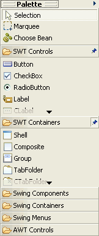
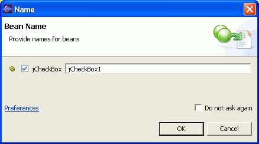

You can use the visual editor palette or the Choose a Bean dialog
to add components to your visual Java class.
For example, for an SWT class, you can select the Button control
(on the palette under the SWT Controls drawer) and drop it onto your application
in the Design view.
To add a component to your visual class in the Design
view:
- Select the component that you want to add to your Java class by
doing one of the following steps:
- In the visual editor palette, select the component that you want to
add to the design.

- Click the down arrow next to the Choose Bean icon in the toolbar,
and select a component from the list.
- Click Choose component in the palette to open
the Choose a Bean dialog. Enter the name of the component. As you type, the
dialog displays available and valid classes in the Java build path for your
current Java project. Valid classes have a null constructor rather than the
static getInstance() pattern. Select a component and click OK.
- Move your pointer over the Design view to the point where you want
to add the component. The mouse pointer will show a plus sign when it is positioned
over a valid drop location. Depending on the position where you are dropping
the component and which layout managers are being used, if any, you might
see other visual cues to help you see where the component will be added.
- Left-click the design to add the component.
The
Bean Name window opens, where you can specify the name for the component.

Select Do
not ask again to not show this window each time you add a bean.
The visual editor will use a default name. This choice can be changed in the
visual editor preferences.
The Design view shows the visual representation of the component,
and the Source view shows the Java code that was generated when you added
the component.